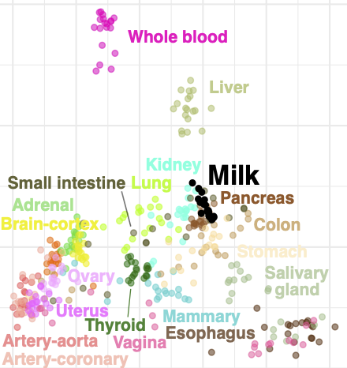
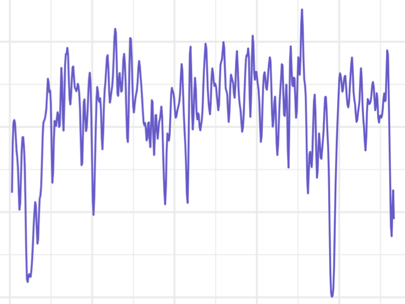

Research
Health benefits attributed to breastfeeding include reduced risk of infectious and autoimmune diseases for infants, lower risk for breast and ovarian cancer for mothers, and improved metabolic health for both mothers and infants. However, for many of these potential benefits we do not understand the specific underlying milk components or mechanism. Human milk contains a complex milieu of macronutrients, vitamins and minerals, prebiotic sugars, microbes, antimicrobial peptides, antibodies, and maternal cells. Milk composition varies between human populations, individuals, and over the course of lactation. Despite its health relevance, few studies have examined the heritability or genetics of human lactation and milk composition. The focus of our research is to use tools from human genetics and genomics to improve our understanding of human milk variation, its evolution across human populations, and its impact on human health.

Quantitative genetics of human milk
Human milk contains the milk-producing mammary epithelial cells, providing a non-invasive view of the biology of the lactating mammary gland. Utilizing data from the Mothers and Infants LinKed for Healthy Growth (MILk) study and other sources, we are exploring how maternal genetic variation influences the milk transcriptome between individuals and over the course of lactation.

Genetic epidemiology of lactation
Breast cancer ...

Host-microbe interactions in the mom-milk-baby system
CMV ...